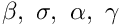

Dynamics of cantilevered pipe conveying fluid. More...
Classes | |
| class | Integrator |
| Class containing various integration procedures Contains both `functional-based and value-based numerical integration procedures. More... | |
| class | Coefficients |
| Class to determine various coefficients The following coefficients are determined: More... | |
| class | ModeShape |
| Class to define modal shape functions and their derivatives Contains function definition of cantilever beam modal shape functions and their derivatives. More... | |
| class | Response |
| Class for time-domain response of the cantilevered pipe system Contains the following functions. More... | |
| class | RootLocus |
| Class for root locus To determine variation of complex frequencies (poles) for a given set of parameters . More... | |
| class | FlutterVelocityVsBeta |
Class for variation of critical flow velocity with mass ratio  for a given set of parameters. More... for a given set of parameters. More... | |
Functions | |
| def | closestNeighbourMapping (previous, current) |
| UTILITY FUNCTIONS. More... | |
| def | plotBetaVsVelocity () |
| Function to plot variation of v/s flutter flow velocity . | |
Variables | |
| int | SMALL_SIZE = 13 |
| int | MEDIUM_SIZE = 20 |
| int | BIGGER_SIZE = 22 |
| family | |
| size | |
| titlesize | |
| labelsize | |
| fontsize | |
| int | line_width = 2 |
| list | line_style = ['--', '-.', '-'] |
| list | marker = ['*', 'd', 'o', '+'] |
| list | legend = ["Coarse", "Medium", "Fine"] |
| list | colour = ["red", "blue", "green", "magenta", "brown"] |
| int | numIntegrationPoints = 2**8 + 1 |
| Global variable: number of integration points Number of integration points. | |
| modalEig = np.zeros(16) | |
| Non-dimensional modal eigenvalues for a cantilever beam: . | |
| normalizationFactor = np.zeros(modalEig.size) | |
| float | beta_ = 0.2 |
| Parameters. | |
| float | gamma_ = 0.0 |
| float | alpha_ = 0.0 |
| float | sigma_ = 0.0 |
| float | U = 5.57 |
| Variation of flutter flow velocity with mass ratio for different gamma_ plotBetaVsVelocity() | |
| xi = np.linspace(0, 1, 501) | |
| Domain discretization. | |
| int | N = 10 |
| Number of modes for Galerkin approximation. | |
| U_array = np.linspace(0,20,301) | |
| Non-dimensionalized flow velocity array. More... | |
| t = np.linspace(0, 10, 501) | |
| float | displacement_ic = 0.1*ModeShape.phi(xi, 1) |
| velocity_ic = np.zeros(xi.shape) | |
| fps | |
| velocity_hammer_input | |
| velocity_hammer_magnitude | |
| record_video | |
Detailed Description
Dynamics of cantilevered pipe conveying fluid.
Function Documentation
◆ closestNeighbourMapping()
| def cantilevered_pipe_conveying_fluid.closestNeighbourMapping | ( | previous, | |
| current | |||
| ) |
UTILITY FUNCTIONS.
Function for step-wise "ascending" order for a mode
Variable Documentation
◆ U_array
| cantilevered_pipe_conveying_fluid.U_array = np.linspace(0,20,301) |
Non-dimensionalized flow velocity array.
Variation of complex frequencies with flow velocity U locus = RootLocus.rootLocus(U_array, modes_to_plot = 4, save_plot ='No', returnEigenvalues='Yes') print(locus[:,0]) RootLocus.rootLocusScatter(U_array, modes_to_plot = 3, save_plot ='No')
Variation of flutter flow velocity with mass ratio for a given set of parameters